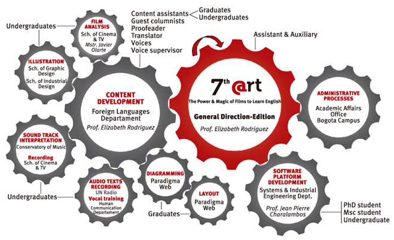

ABOUT US
Es una herramienta virtual, creada y producida por el Departamento de Lenguas Extranjeras para apoyar el aprendizaje autónomo del inglés de los estudiantes de pregrado y posgrado de la Universidad Nacional de Colombia, mediante la utilización del cine, la Internet y los ambientes virtuales, a través de actividades de aprendizaje que buscan incentivar y desarrollar macro habilidades de anticipación, comprensión y extensión; a partir del reparto, los personajes, los escenarios, los temas y tramas de los filmes.
En otras palabras, 7th @rt ofrece a los estudiantes oportunidades para fortalecer y generar actitudes positivas que les ayuden a mejorar su conocimiento del inglés y desarrollar habilidades de lengua y estrategias de aprendizaje. En este sentido, este objetivo denota además un proceso continuo, bajo el principio de que aprender una lengua extranjera es no sólamente una actividad comunicativa y cooperativa en sí misma, sino también un ejercicio de autonomía. Por lo tanto, se hace énfasis en la gran necesidad e importancia de que los estudiantes tomen iniciativas que contribuyan a su experiencia de aprendizaje, en el proceso de convertirse en aprendices autónomos.
La adaptación de 7th @rt a lenguaje HTML5 es un proyecto de la Dirección Académica, Sede Bogotá, contemplado en el macro proyecto “Fortalecimiento de las competencias comunicativas académicas (lectura y escritura) a través de los currículos y uso de las lenguas extranjeras para la proyección internacional” (Plan Global de Desarrollo 2013-2015), que da continuidad al proyecto de investigación-creación 7th @rt Virtual Material for Autonomous Learners de la Dirección de Investigación, SedeBogotá.

Sus fortalezas
- Es un recurso innovador de aprendizaje por ser pionero en cuanto a la llave cine-Internet y los ambientes virtuales, medios propios de la educación por la imagen del siglo XXI, en el marco del aprendizaje autónomo del inglés en el contexto nacional.
- Facilita el acercamiento del estudiante a una lengua auténtica y su uso en contextos culturales auténticos.
- Observa total originalidad en la composición de textos, la producción de imágenes y la interpretación de bandas sonoras, en estricto cumplimiento de la Ley de Derechos de Autor.
- El proceso de su adaptación a HTML5 se desarrolla a través de un trabajo interdisciplinario con la participación de egresados, y estudiantes de pregrado y posgrado de siete Unidades Académicas -cuatro Facultades- con el concurso de profesores, como se ilustra en el gráfico.
- Es una herramienta producto de un estudio desarrollado con la participación de estudiantes del Programa de Filología e Idiomas: Inglés.
Su formato presenta
- Video tutorial.
- Cartelera cinematográfica con enlace hacia los sets de actividades, con filtro de búsqueda por título, director y año.
- Menú interactivo por película o documental.
- Síntesis de las obras cinematográficas.
- Actividades de aprendizaje basadas tanto en los filmes, como en la invaluable producción investigativa de la Universidad Nacional de Colombia que desarrollan temas asociados a las películas y documentales.
- Columnas escritas por profesores de diferentes facultades y columnistas invitados, que comentan la obra cinematogrâñcao sus temas.
- Datos interesantes asociados a los temas vistos en cada filme.
- Audio textos de nativos y estudiantes no nativos.
- Recurso para grabación de voz.
- Muro para la interacción entre y con los usuarios.
- Prototipo de la herramienta, versión producto de investigación
Sus comentarios y sugerencias son bienvenidos en el muro e 7th @rt.
Elizabeth RodriguezCreadora & Directora - Editora General